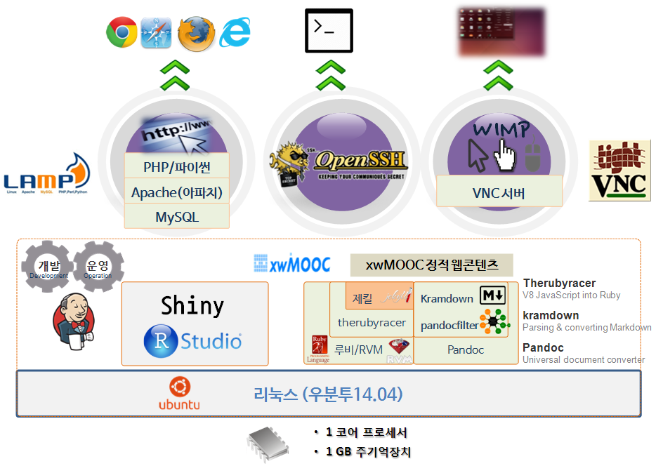
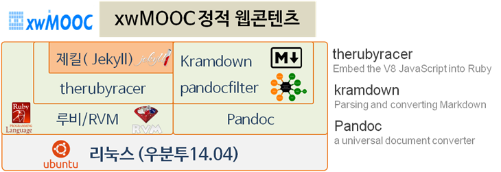
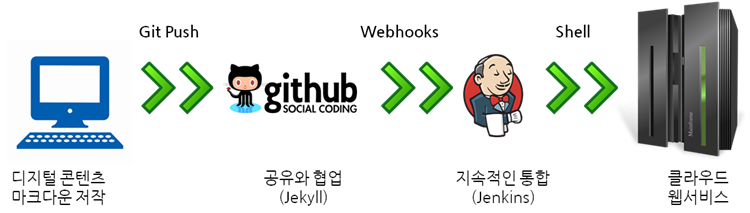
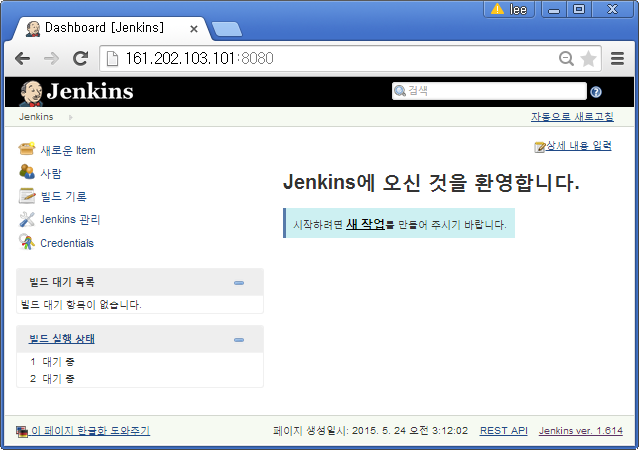
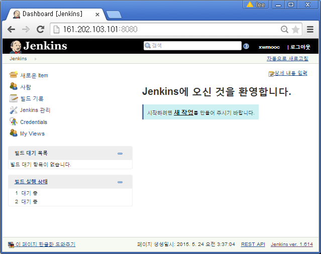
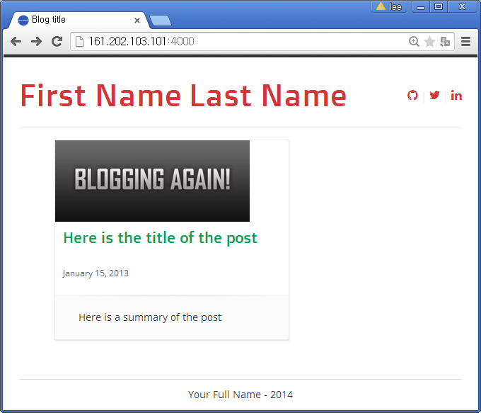

데이터 과학을 위한 저작도구
데이터 과학 개발운영 아키텍처
학습 목표
- 데이터 제품을 위한 정적 웹사이트 개발 풀스택 아키텍처 설계한다.
- CLI, GUI, 웹 기반 개발 인터페이스를 지원한다.
- VM, LAMP, Jekyll, RStudio/Shiny 개발서버를 자동화한다.
- 개발환경과 배포환경을 자동화한다.
데이터 제품 개발을 위한 개발서버 아키텍처
데이터 제품 개발을 위한 정적 웹사이트 개발 풀스택 아키텍처은 다음과 같다. SSH를 통해 명령라인 인터페이스(CLI) 접근, LAMP 설치를 통한 웹 인터페이스, VNC를 통한 데스크톱 GUI 인터페이스를 통해서 언제 어디서나 다양한 방식으로 개발을 진행할 수 있다. 정적 웹콘텐츠 개발을 위한 개발서버로 리눅스 우분투 운영체제 위에 세가지 개발 인터페이스를 지원한다.
- 웹 인터페이스 : 크롬, 사파리, 파이어폭스, 익스플로러 웹브라우져를 통해 개발 서버에 접속해 개발한다.
- 명령라인 인터페이스(CLI) : 보안 쉘(Secure SHell, SSH)을 통해 개발 서버에 접속해 개발한다.
- 그래픽 사용자 인터페이스 (GUI) : WIMP(Window, Icon, Menu, Pointer)를 지원하는 VNC 서비스를 원격 데스트톱을 통해 개발서버에 접속해 개발한다.
Shiny와 RStudio를 통해 데이터 제품을 개발하고, 제킬을 통해 정적 웹사이트를 함께 젠킨스를 통해서 개발산출물을 운영 환경에 배포한다.

개발 서버 준비 순서
- 가상서버 생성할 때 LAMP를 설치하여 주문한다.
- 정적 웹사이트 개발 툴체인 설치한다.
- 데스크톱 GUI를
tightVNC기준 설치한다.
- 데이터 과학 개발위한
Shiny와RStudio를 설치한다.
- 개발 제품 배포를 위해
젠킨스(Jenkins)를 설치한다.
1. LAMP 설치된 가상 서버 생성
vm-create.py 파이썬 프로그램을 통해서 LAMP가 설치된 가상 컴퓨터를 주문한다.
root@shiny:~# python vm-create.py dev-lampimport sys
import SoftLayer
vmname = sys.argv[1]
client = SoftLayer.create_client_from_env(username="SLXXXXXX",
api_key="7c7XXXXXXXXXXXXXXXXXXXXXXXXXXXXXXXXXXXXXXXXX)
shiny_object = client['Virtual_Guest'].createObject({
'hostname': vmname,
'domain': 'xwmooc.net',
'startCpus': 1,
'maxMemory': 1024,
'hourlyBillingFlag': 'true',
'operatingSystemReferenceCode': 'UBUNTU_LATEST',
'localDiskFlag': 'true',
'datacenter': { "name" : 'hkg02'},
'local_disk': 25,
'public': 'true'
})
for key, value in shiny_object.iteritems():
print key, " : ", valueservice --status-all 명령어를 통해서 apache2 서비스가 동작하고 있음을 확인한다. 웹브라우져를 열고 ifconfig eth1을 통해 inet addr:169.XX.XXX.XX IP주소를 확인하고 주소창에 넣어 정상적으로
Apache2 Ubuntu Default Page가 뜨는지 확인하는 것도 방법이다.
root@shiny:~# service --status-all | grep '+' [ + ] acpid
[ + ] apache2
[ + ] apparmor
[ ? ] apport
[ ? ] binfmt-support
[ ? ] console-setup
[ + ] cron
[ + ] cups
[ + ] cups-browsed
[ ? ] dns-clean
[ + ] friendly-recovery
[ + ] kerneloops
[ ? ] killprocs
[ ? ] kmod
[ ? ] lightdm
[ ? ] mysql
[ ? ] networking
[ ? ] nimbus
[ ? ] ondemand
[ + ] open-iscsi
[ ? ] pppd-dns
[ ? ] rc.local
[ + ] rsyslog
[ + ] saned
[ ? ] sendsigs
[ ? ] speech-dispatcher
[ + ] udev
[ ? ] umountfs
[ ? ] umountiscsi.sh
[ ? ] umountnfs.sh
[ ? ] umountroot
[ + ] xe-linux-distribution
[ + ] xrdp2. 정적웹콘텐츠 개발 위한 제킬(Jekyll) 설치
2.1 root 권한을 갖는 사용자 등록
루트 권한을 갖는 사용자를 준비하기 위해서 먼저 일반 사용자를 등록하고 등록된 사용자에 루트권한을 부여한다. adduser xwmooc 명령어를 통해서 xwmooc 사용자를 등록했다. 그리고 나서 gpasswd -a xwmooc sudo 명령어로 sudo 그룹에 등록해서 루트권한을 부여했다.
su - xwmooc 명령어를 통해서 루트가 아닌 일반사용자로 로그인했다.
root@vnc:~# adduser xwmooc
Adding user `xwmooc' ...
Adding new group `xwmooc' (1000) ...
Adding new user `xwmooc' (1000) with group `xwmooc' ...
Creating home directory `/home/xwmooc' ...
Copying files from `/etc/skel' ...
Enter new UNIX password:
Retype new UNIX password:
passwd: password updated successfully
Changing the user information for xwmooc
Enter the new value, or press ENTER for the default
Full Name []: xwMOOC
Room Number []:
Work Phone []:
Home Phone []:
Other []:
Is the information correct? [Y/n] Yroot@vnc:~# gpasswd -a xwmooc sudo
Adding user xwmooc to group sudo
root@vnc:~# su - xwmooc
xwmooc@vnc:~$2.2. 정적 웹콘텐츠 개발 툴체인 설치
정적 웹콘텐츠 개발 툴체인 설치에 대한 자세한 사항은 정적 웹콘텐츠 개발 가상서버 구축, 윈도우 환경을 참고한다.

3. 데스크톱 GUI 설치
가상 컴퓨터 데스크톱 GUI 설치에 대한 자세한 사항은 VNC 그래픽 사용자 인터페이스(GUI)를 참조한다.
4. 데이터 과학 툴체인 설치
데이터를 위한 언어인 R을 사용하여 데이터 과학 툴체인을 구축할 경우 RStudio와 Shiny 서버가 필요하다. RStudio와 Shiny 설치는 다음을 참고한다.
- R
- RStudio IDE
- RStudio 서버
- Shiny 서버
5. 개발운영 툴체인 구축
데브옵스(DevOps, 개발(Development)과 운영(Operations)의 합성어)는 과거 개발과 운영이 분리되어 발생하는 문제점을 개선하여 소통과 협업, 자동화를 강조하는 개발방법론으로 소프트웨어 제품과 서비스를 빠른 시간에 개발 및 배포할 수 있게 하는 방법 중 하나다. 과거에는 허드슨(Hudson)을 많이 사용하였으나, 오라클에 인수합병되면서 커뮤니티가 허드슨과 젠킨스로 이원화되고 허드슨 핵심개발자 Kohsuke Kawaguchi는 2011년 구글 오라일리 공개소프트웨어상을 수상했다. 2013년 12월 기준 GitHub에 젠키스는 개발자 567명, 1,100 여개 저장소, 반면에 허드슨은 개발자 32명, 공개 저장소 17개 상황으로 전개되었다.
5.1. GitHub SSH 연결 설정
GitHub에 개발 프로그램과 결과물을 패스워드를 입력하지 않고 저장하여 동기화한다. 먼저 SSH 학습에서 원격 컴퓨터 연결에서 사용한 공개열쇠와 개인열쇠를 사용한다. 다시 열쇠상을 생성해서 사용해도 된다.
GitHub에 계정을 생성하면 우측상단에 설정 아이콘(기어 모양)을 클릭하면 좌측에 SSH keys가 보인다. 클릭해서 들어가면 SSH keys를 등록하는 화면이 나온다. 당황하지 말고, id_rsa.pub 파일을 텍스트 편집기로 열어 전체 내용을 CTRL+A 키를 눌러 선택하고 복사한다. GitHub SSH keys 메뉴에서 Add SSH key를 눌러 복사한 내용을 붙여넣고 추가하여 저장완료한다.
$ ssh -T git@github.com
Warning: Permanently added the RSA host key for IP address '192.30.XXX.XXX' to t
he list of known hosts.
Hi xwMOOC! You've successfully authenticated, but GitHub does not provide shell access.마지막으로 쉘 화면에서 ssh -T git@github.com 명령어를 입력하면 설정이 완료된다. 정상적인 작동여부를 테스트하기 위해서 git push 명령어를 보내면 아이디와 패스워드를 묻지않고 ssh 인증으로 작업을 완료한다.
$ git push origin gh-pages5.2. GitHub 웹훅(WebHooks) 자동 배포
테스트 및 디버그 쉽고, 확장성이 뛰어 나고, 좀더 안전한 방법
Jekyll사이트 실행만 전담하는 새로운 사용자를 생성한다.- 신규 사용자가 모든
Jekyll관련 모든 작업을 할 수 있는지 확실히 한다.
- 신규 사용자가 모든
Jekyll사이트를 실제 서비스할 가상 컴퓨터를 생성한다.- 생성한 신규 사용자가 가상 컴퓨터를 실행할 수 있게 한다.
- 문서 루트 (document root)를 생성한 신규 유저가 소유하고 관리하게 한다.
Jenkins를 고용해서 지속적인 통합 배포를 한다.Jekyll과Jenkins를 웹훅을 사용하여 연결한다.- 로컬 컴퓨터에서 작업한 결과를
git push하면 자동으로 웹훅을 타고 젠킨스로 연결되어 지속적인 통합 배포 도구에 연결되어 클라우드 운영 서버에 배포되어 운영된다.
- 로컬 컴퓨터에서 작업한 결과를

5.3. 젠킨스(Jenkins) 설치
젠킨스(Jenkins)는 기본적으로 자바기반으로 웹 인터페이스 사용을 전제로 하고 있다. 따라서, 아파치같은 웹서버 및 자바 JDK 혹은 JRE를 사전에 설치해야 한다. 젠킨스 설치에 대한 원문은 Install Jenkins on an Ubuntu 14.04 VPS에서 확인한다.
여기에서는 공개 소프트웨어 자바(JAVA) 7을 apt-get install openjdk-7-jdk을 통해서 설치한다.
root@dev:~# apt-get update # 최신 갱신 가져오기
root@dev:~# apt-get upgrade # 최신시스템으로 개선 업그레이드
root@dev:~# apt-get install apache2 # 아파치 웹서버 설치
root@dev:~# apt-get install openjdk-7-jdk # 공개소프트웨어 자바 7 설치
root@dev:~# java -version
java version "1.7.0_79"
OpenJDK Runtime Environment (IcedTea 2.5.5) (7u79-2.5.5-0ubuntu0.14.04.2)
OpenJDK 64-Bit Server VM (build 24.79-b02, mixed mode)웹서버와 자바 설치가 완료되면, 이제 젠킨스를 설치하자. 젠킨스 설치를 위한 키값과 소스정보를 가져온다. 먼저 키값을 가져오고 나서 젠킨스 설치대상목록 정보를 가져온다. 젠킨스를 설치하기 전에 다시 정보를 갱신하고 나서 apt-get install jenkins 명령어로 설치한다.
root@dev:~# wget -q -O - https://jenkins-ci.org/debian/jenkins-ci.org.key | sudo apt-key add -
root@dev:~# sh -c 'echo deb http://pkg.jenkins-ci.org/debian binary/ > /etc/apt/sources.list.d/jenkins.list'
root@dev:~# apt-get update
root@dev:~# apt-get install jenkins젠키스 설치가 완료되면 기본적으로 데몬(Daemon)으로 뜨게 되어서, http://161.202.103.101:8080/와 같이 웹부라우져에 8080 포트에 IP 주소를 입력하면 된다.

가장 먼저해야 되는 할일은 젠킨스를 임의 사용자가 사용하지 못하도록 사용자 권한관리를 한다. 젠킨스 첫 화면에서 보면 좌측에 Jenkins 관리 메뉴가 있다. 이를 클릭하면, 중간에 Configure Global Security가 보인다.
Enable Security를 체크하고 Security Realm아래 Jenkins' own user database 아래 사용자의 가입 허용을 체크한다. Authorization에서는 Matrix-based security를 클릭하고 Anonymous에 View에 읽기권한 Read만 클릭하고 저장한다.
사용자 권한 설정이 완료되면, 최초 사용자를 등록해야 한다. Sign up에 계정명, 암호, 암호확인, 이름, 이메일주소를 등록하면 Administrator 권한을 갖는 사용자가 생성되고 작업을 진행하게 된다. 젠킨스 설치의 자세한 사항과 원문은 다음 웹사이트를 참고한다.

5.4. 젠킨스(Jenkins) 깃허브(GitHub) 플러그인 설치
젠킨스의 강력한 기능은 다양한 확장기능 플러그인(Plugin)을 갖는다. 개인이 혼자 개발을 할때는 Git, 여러명이 공동으로 할 때, 특히 외국 사람과 공동작업을 수행할 때는 GiHub가 좋다. 배포 및 빌드를 젠킨스를 통해서 연계하게 되면, 개발과 빌드 배포가 모두 자동화되어 생산성을 많이 향상 시킬 수도 있다.
젠킨스 깃허브 플러그인 설치는 먼저 관리자 권한이 있는 사용자로 로그인 한다음 좌측메뉴에서 Jenkins 관리 -> 플러그인 관리에서 설치가능(Available) 탭을 클릭하고 필터: 검색창에 Git를 입력하면 다양한 Git 관련 플러그인이 나타난다. GitHub Plugin을 클릭하고, 지금 다운로드하고 재시작 후 설치하기를 클릭해서 플러그인 설치를 완료한다.
폴링과 푸쉬 방법 모두 변경사항을 인지하고 자동으로 빌드 및 배포실행한다는 측면에서 동일하나 폴링은 Git/GitHub 버젼관리 시스템에 변경사항이 필요없지만, 젠킨스나 Git/GitHub에 많은 부하를 줄 수 있고, 폴링 주기에 따라 변경사항 반영이 부족할 수 있다. 푸쉬방식은 전송하는 Git/GitHub와 받는쪽 젠킨스 모두 일정 작업이 필요하다. 하지만, 폴링에 비해서 변경사항이 발생되면 최소의 부하로 즉시 반영할 수 있는 장점이 있다.
5.5. 젠킨스(Jenkins) 깃허브(GitHub) 툴체인 통한 지속적인 통합
지속적인 통합(Continous Integraion, CI)를 위해서 먼저 젠킨스가 주체가 되어서 하는 방법은 젠킨스 시작화면에서 http://161.202.103.101:8080/ 좌측에 Jenkins 관리 –> 시스템 설정 –> GitHub Web Hook 에서 Let Jenkins auto-manage hook URLs을 클릭하여 설정한다. 다른 한가지는 GitHub 중심으로 진행하는 것으로 Manually manage hook URLs을 클릭하고 저장한다.
깃허브 화면으로 돌아와서 저장소를 선택하고 들어가면 우측에 Settings 메뉴가 있어 클릭하고 들어가면, 좌측편에 Webhooks & Services가 나온다. 클릭하고 들어가면 Services에서 Add Service를 클릭하면 하위선택항목이 많은 Jenkins (GitHub plugin)을 선택한다. 그리고 나서 Jenkins hook url에 http://161.202.103.101:8080/github-webhook/ 설정해서 완료한다. 상단의 Test service를 클릭해서 Okay, the test payload is on its way.가 나오면 설정이 정상적으로 완료된 것이다.
젠킨스 rpy-cloudlayer에 새로운 Item을 등록한다. 먼저 새로운 Item을 등록하면 Item 이름을 입력한다. 그리고 나서 Freestyle project를 클릭하고 OK를 클릭한다. 그리고 나서 차례로 관련 정보를 입력한다.
- GitHub project : https://github.com/statkclee/pyr-cloudlayer/
- 소스 코드 관리 :
Git클릭, Repositories –> Repository URL : https://github.com/statkclee/pyr-cloudlayer.git Credentials에는 Add를 클릭해서 GitHub 사용자이름과 비밀번호를 입력한다. - Branches to build : Branch Specifier (blank for ‘any’)
*/gh-pages로 브랜치를 설정한다. - Additional Behaviors : Add를 크릭하고
Advanced sub-module behaviours를 선택한다. - 빌드 유발 :
Build when a change is pushed to GitHub체크한다. - Build :
Add build step–>Execute Shell을 클릭하고 실행 쉘 스크립트를 작성한다.
git submodule foreach git checkout master
git submodule foreach git pull
jekyll build -d _site마지막으로 저장을 누르면 모든 설정이 완료되었다.
5.6. 제킬 데모시연 프로그램 설치
제킬 테마에서 Jekyll Masonry를 시연데모용도로 설치한다. 여러가지 방법이 있지만, 제킬이 설치된 상태에서 git clone을 통해서 바로 웹에서 볼수 있도록 브랜치 -b gh-pages를 인자로 넣고 Jekyll Masonry가 설치된 깃허브 페이지를 다운로드 한다. 그러면 jekyll serve 명령에 _site로 정적 웹페이지가 자동 설치되고 http://161.202.103.101:4000/와 같이 포트번호 4000을 열게되면 웹사이트가 개설된 것을 확인할 수 있다.
root@dev:~# git clone -b gh-pages git@github.com:pasindud/jekyll-masonry.git
root@dev:~# cd jekyll-masonry-master/
root@dev:~/jekyll-masonry-master# jekyll serve